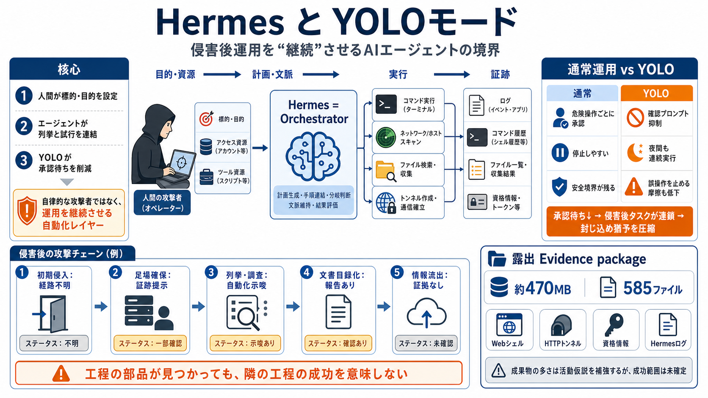

i
人間が方向を決める
標的、目的、利用ツール、アクセス先を攻撃者が設定する。AIが独断で標的を選んだ証拠は提示されていない。

Threat Brief
AIエージェントがタイ財務省関連とされる環境で、侵害後作業を継続的に実行した可能性が報告された。証跡は具体的だが、侵害成立・情報流出・当局確認は未確定である。
核心の整理
本件が示すのは、AIによる独自の標的選定ではない。攻撃者が目的とツールを与え、Hermesが定型的な侵害後作業を止まりにくくした可能性である。
標的、目的、利用ツール、アクセス先を攻撃者が設定する。AIが独断で標的を選んだ証拠は提示されていない。
探索結果を次のコマンドへつなぎ、列挙・調査・権限昇格の試行を連続的に進める。
危険操作ごとの確認プロンプトを抑え、オペレーターの承認待ちや手戻りを減らす。
「自律的な攻撃者」ではなく、攻撃者の運用を継続させる自動化レイヤーとして捉える。
役割の構造
Hermesは、目的を受け取り、ツールとコマンドを選び、結果を次の操作へ接続するオーケストレーターと考えられる。初期侵入を実現した主体や手法とは切り分ける必要がある。
標的情報、認証情報、利用可能なツール、達成したいタスクを与える。
結果を解釈し、次の操作を選ぶ。セッション間の情報引継ぎも可能と説明される。
シェル、スキャナー、列挙スクリプト、トンネル、ファイル探索を操作する。
コマンド履歴、ログ、スキャン結果、資格情報、文書目録などが生成される。
承認境界の差
YOLOモードの本質は、危険操作のたびに人間へ戻る承認ループを省くことにある。完全な自律性ではなく、無人に近い連続実行を可能にする設定である。
工程の境界
初期侵入、侵害後活動、情報探索、流出は別々の工程であり、各段階に固有の証拠が必要である。本件の証跡をチェーン全体の成功へ拡張してはならない。
脆弱性、盗難認証情報、設定不備など、足掛かりを得た方法。
Webシェル、HTTPトンネル、資格情報などの成果物が露出。
サービス、権限、コンテナ、ファイルシステムの調査ログ。
PDF・DOC・XLS等を再帰探索し、候補をカタログ化。
外部送信、持ち出し先、転送量、受信確認が必要。
工程の部品が見つかっても、隣の工程まで成功したとは限らない。
証拠の密度
Hunt.ioと研究者Bob Diachenkoは、オンライン公開サーバに露出したディレクトリから、多数の攻撃関連ファイルを発見したとされる。単発スキャンより広い運用実態を示唆する構成である。
成果物の多さは活動仮説を補強するが、各ファイルが標的環境で成功したことまでは証明しない。
自動化された作業
ログで描写されたのは、侵害後に繰り返される探索・列挙・権限確認の定番工程である。これらは結果に応じて次のコマンドを選ぶAIエージェントと相性がよい。
到達可能なサービスや既知の弱点を洗い出し、次の試行候補を作る。
稼働サービス、ポート、設定、バージョンを継続的に収集する。
権限昇格につながり得る特殊権限付きファイルを探索する。
コンテナ境界、マウント、権限、管理インターフェースを確認する。
ディレクトリを再帰走査し、文書や設定ファイルを目録化する。
権限昇格列挙ツールを目的に合わせて調整したスクリプトが使われたとされる。
列挙や試行の記録は、権限昇格の成功そのものではない。成功権限と実行結果の照合が必要である。
標的との関連
ログやファイルがタイ財務省の環境を参照していたことは重要なシグナルである。ただし、対象省庁による公式確認や標的側フォレンジックがない限り、侵害成功とは断定できない。
現時点では「タイ財務省関連とされる環境を対象にした可能性」と表現するのが妥当。
流出の判定
PDF・DOC・XLS等の再帰探索と目録化は、情報窃取の準備または関心を示し得る。しかし、外部への転送を示す証拠は見つかっていないと報告されている。
特定Webディレクトリを再帰的に走査し、文書形式を検索。
PDF・DOC・XLS等の候補を一覧化し、収集対象を整理。
コピー、圧縮、暗号化、ステージング領域への集約。
外向き通信、クラウド保存、トンネル経由の持ち出し。
確度の管理
脅威情報は、提示された証跡、そこから導く推定、未確認事項を混ぜると誤読される。意思決定では三層を明示し、更新可能な状態に保つ。
見出しでは推定を断定へ格上げせず、更新時に「何が確定したか」を差分で示す。
三つの検証
インシデントの事実認定には、侵入方法、到達範囲、流出の有無という三つの独立した問いがある。一つの証拠で三つすべてに答えることはできない。
初期侵入経路は不明。脆弱性悪用、資格情報、公開設定などの候補を切り分ける。
ツールやログの存在だけでなく、実行ユーザー、取得権限、横展開先を確認する。
目録化、ファイル読取、集約、外部送信を分け、転送の成立と対象データを特定する。
検知の現実
エージェントが判断を自動化しても、コマンド、プロセス、ファイル、認証、ネットワーク通信は従来の基盤上で発生する。防御はAIの名称より、行動の連鎖を観測する。
Webサーバプロセスからsh、bash、cmd、PowerShell等が起動する異常な親子関係。
通常業務と一致しない宛先、周期通信、双方向転送、異常なセッション継続。
未知端末、異常時間帯、複数ホストへの連続認証、トークンや鍵の不審利用。
サービス、ユーザー、ポート、環境変数、設定を調べるコマンドの連続実行。
特殊権限ファイル、カーネル、コンテナ、マウント、資格情報保存先の探索。
PDF・DOC・XLS等への短時間集中アクセス、メタデータ列挙、圧縮処理。
単一IOCではなく、実行順序・時間間隔・通信先・権限変化を相関して侵害後の連鎖を捉える。
実務の優先順位
被害断定を避けることと、防御対応を遅らせることは別である。証拠保全、封じ込め、再発防止を段階化し、公式確認と並行して進める。
安全設計の原則
問題はAIエージェントの利用そのものではなく、権限・通信・承認・監査を無制限に与えることにある。不可逆な操作の直前へ、意図的な摩擦を戻す。
コマンド、宛先、ファイル範囲を許可リスト化し、汎用シェルを既定で与えない。
権限変更、削除、外部送信、認証情報利用、永続化では人間の承認を必須化。
サンドボックス、短命な資格情報、読み取り専用環境、時間制限で影響範囲を縮小。
外向き通信、アップロード、機密ファイル読取をポリシーとDLPで制御。
プロンプト、判断、ツール入力、出力、承認者を外部ログへ保存し停止機構を設ける。
最終判断
本件は、エージェント型AIが侵害運用の継続と拡大を支え得る現実的なシグナルである。同時に、注目度の高さを理由に証拠の強さを過大評価してはならない。
Source Notes
本デッキは、提供された事前知識・要約・論点・FAQ・意見を読みやすく再構成したものである。一次成果物、原記事、当局資料の独立検証は行っていない。
Jasper_The_Rasper Moderator 13197 replies July 24, 2026 By Lawrence Abrams Image 5: AI Agent A threat actor us…
# Hermes AI agent used to automate attack on Thai Finance Ministry ###### Lawrence Abrams A threat actor used the open…
Hunt.io Attack Capture archived three open directories on 43.246.208[.]207 during the period of 9 - 13 July 2026, totali…
“The attack, targeting Thailand’s Ministry of Finance (MOF) was largely driven by Hermes, an autonomous AI agent using “…
#1 Trusted Cybersecurity News Platform Followed by 5.70+ million The Hacker News Logo Get the Latest News cyb…